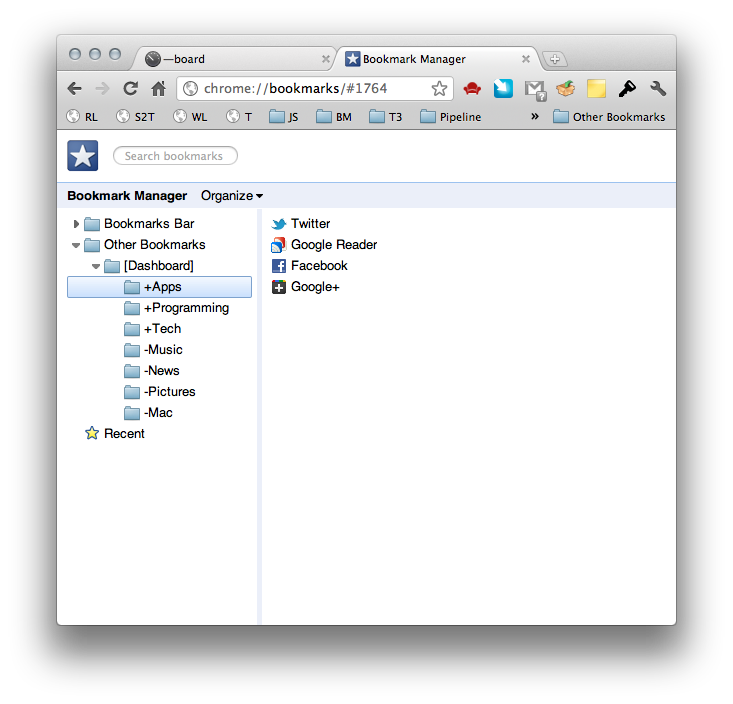
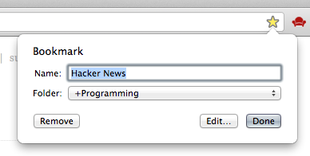
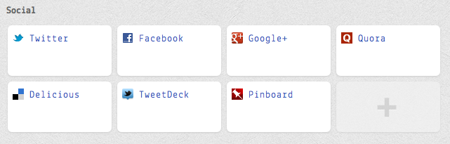
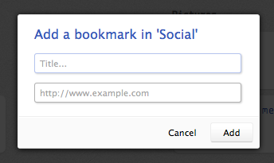
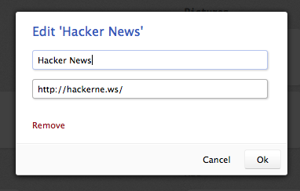

mdash
mdash is a Chrome extension which replaces the New Tab page with a light dashboard linked with your bookmarks.
Installation
Easy install
- Click the big Install button above.
- Allow Chrome to download the .crx file by clicking Continue in the download bar.
- Click the Install button in the pop-up window.
Usage
First time
Once the extension is installed, just open a new window to activate it.
You’ll now see an empty dashboard. This is needed in order to enable to extension to create a special folder named [Dashboard] in the Other Bookmarks folder.
Add a section
To add a section to the dashboard, open the Bookmarks Manager and browse to
/Other Bookmarks/[Dashboard]/
Each section is represented by a folder. As it is currently not possible to attach metadata to a folder, it’s name will be used to determine in which columns the section should appear.
Folders prefixed with the + character will be displayed on the left column, ones prefixed with a - will show on the right column.

Add a bookmark while browsing the Web
Browse any website you would like to add to the dashboard and click the star at the right of the address bar, then choose one of the previously created folders.

Add a bookmark from the dashboard
Click on the edit link at the upper right of the dashboard (or just hold the Alt key),
then click the big + button which will appear at the end of each section.

Give the bookmark a title and a URL (which must starts with // or any other schema), and click Add (or press Enter).
When you're done adding bookmarks, click the done link at the upper right of the page.

Edit or remove a bookmark
Click on the edit link at the upper right of the dashboard (or just hold the Alt key),
then click on the bookmark you want to edit.
In the dialog which will then open, make the needed modifications, then click Save (or press Enter).
To remove the bookmark, click on Remove.
When you're done editing your bookmarks, click done at the upper right of the page.

About
Planned features
- Add a section straight from the dashboard.
- Drag bookmarks around to re-order them or put them in another section.
Changelog
Version 0.7.2 - UX improvements.
Version 0.7.1 - Bugfix.
Version 0.7.0 - Add/edit/remove bookmarks straight from the dashboard.
Version 0.6.3 - Fix a bug which caused the 'edit' mode to always stay on once activated.
Version 0.6.2 - Little UX improvement
Version 0.6.1 - Implement bookmarks edition
Version 0.5.4 - Cosmetic improvements
Version 0.5.3 - Bugfix
Version 0.5.2 - Icons
Version 0.5.0 - Rewritten from scratch
Version 0.1.0 - First public version
Credits
Brought to you with love by @P45C4L and @_romac.
Beautiful icon made by @ntzog.
Dialogs and notifications: UIKit
License
mdash is licensed under the MIT license.